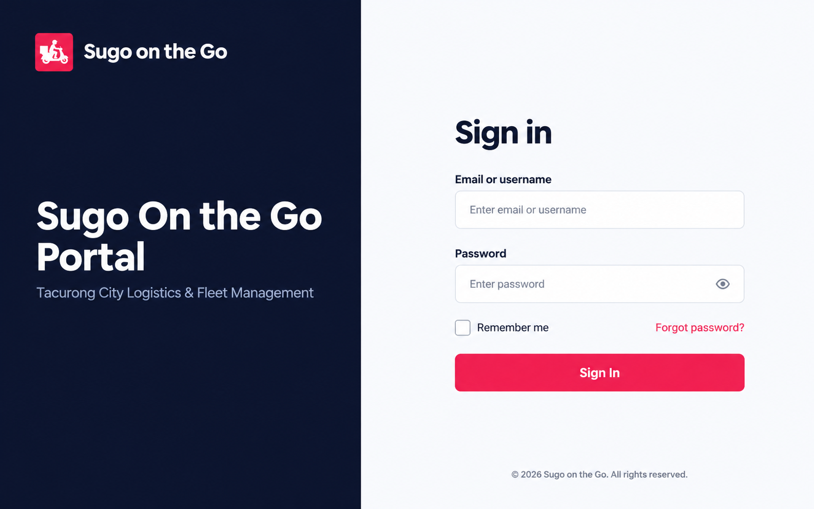
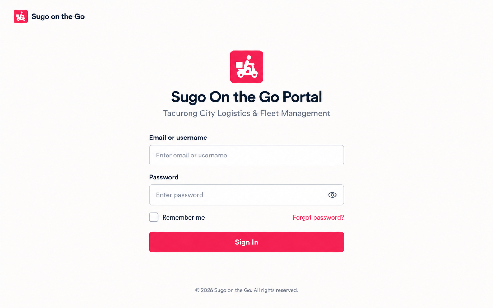
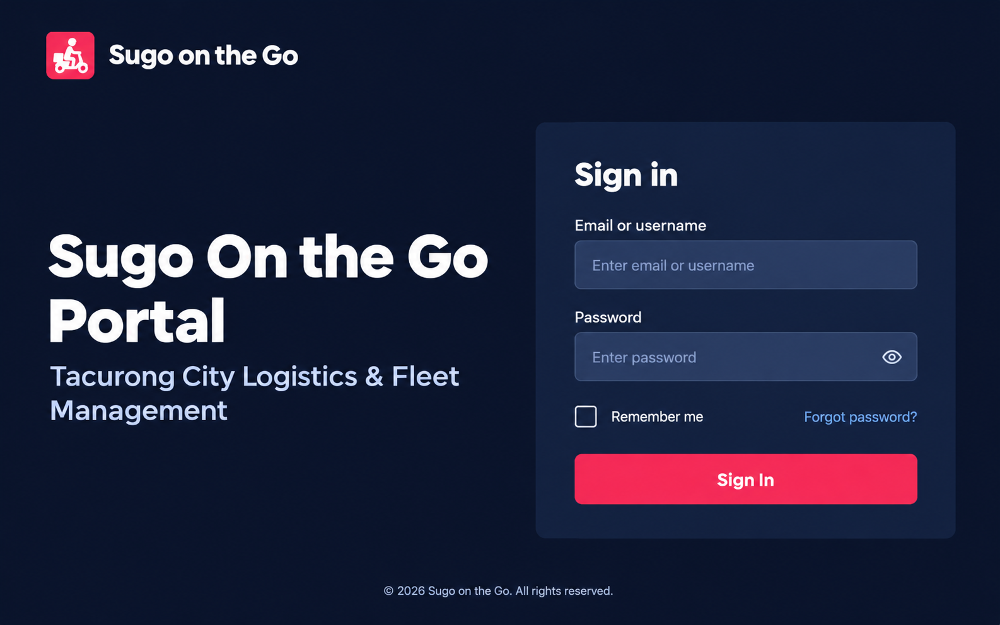

Sugo login: three design candidates
Generated image concepts for review. Choose 1, 2, or 3 in the chat to apply that direction. Click an image to inspect the original at full resolution.
1 · Light split
Navy brand panel with a bright, spacious form.

2 · Centered light
A minimal centered form on a light canvas.

3 · Dark editorial
A spacious navy layout with a distinct form surface.

Created with the built-in imagegen tool. The implementation will use the existing shared scooter logo and login behavior.
View generation prompts